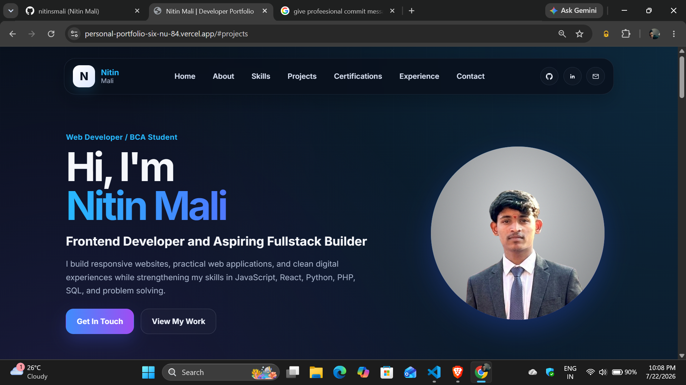

01
Portfolio Website
A personal portfolio designed to bring my profile, skills, projects, and contact information into one clear, responsive home.
View live project
Independent portfolio / 2026
I’m Nitin Mali, a web developer and BCA student focused on responsive interfaces, useful applications, and the steady work of becoming a stronger full-stack builder.

01 / Selected work
A personal portfolio designed to bring my profile, skills, projects, and contact information into one clear, responsive home.
View live project
A final-year project for digital quiz management, with instant scoring, structured login flow, and a smoother experience for users.
View live project
A browser game with score tracking and turn logic, built as a focused exercise in JavaScript interaction and clear game flow.
View live project
A typing practice website that helps users build speed, accuracy, and confidence through focused, browser-based practice.
02 / Profile
I’m a developer who enjoys making the web feel clear, useful, and easy to use.
As a BCA undergraduate, I learn through projects, coding practice, and consistent improvement. My current focus is building clean interfaces and practical solutions with HTML, CSS, JavaScript, React, Python, PHP, and SQL.
I care about the details that help a product feel dependable: responsive layouts, thoughtful interaction, and an experience that stays focused on the person using it.
Download CV03 / Learning in practice
JUL 2026 — PRESENT
Edunet Foundation · Remote
Gaining hands-on experience in Artificial Intelligence through real-world projects and research.
JUN 2026
QSkill · Remote
Developed web applications with React.js and Tailwind CSS, working with API integrations, state management, React Hooks, and client-side routing.
04 / Technology
05 / Continued learning
06 / Get in touch
Have a project, internship, collaboration, or opportunity in mind? I’d be glad to hear from you.